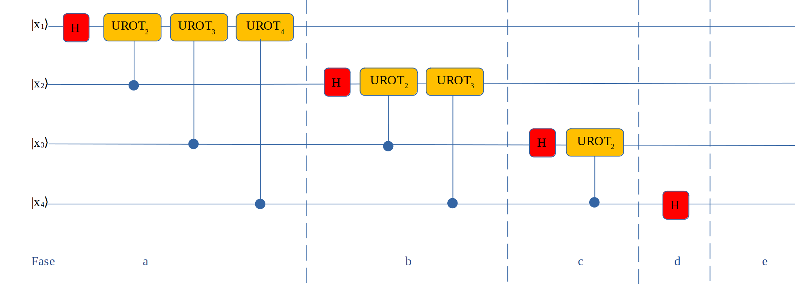
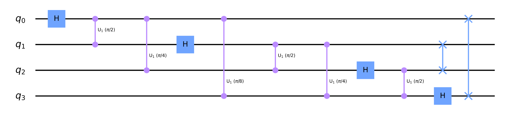
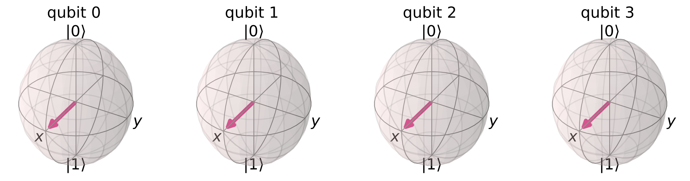
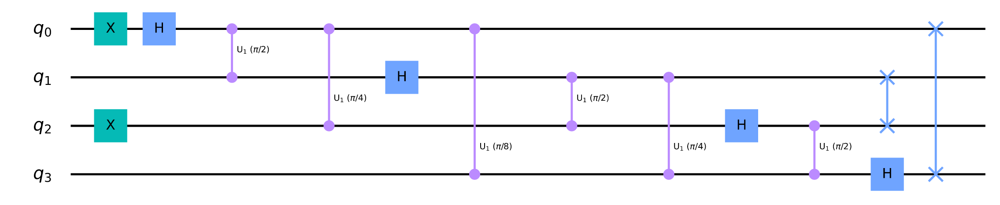
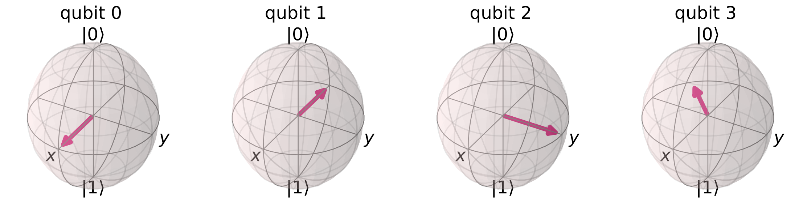

QFT Algorithm
Il Quantum Fourier transform (QFT) è una implementazione del discrete Fourier transform
che agisce sulla amplitude delle wavefunctions.
Le wavefunctions rappresentano i quantum states tramite dei vettori nello spazio di Hilbert.
Il QFT viene utilizzato in diversi quantum algorithms tra cui lo Shor's algorithm ed il quantum phase estimation.
Con il QFT andiamo a trasformare un computational basis in questo caso |0⟩ con un altro basis chiamato Fourier basis applicando la seguente formula:
QFT|x⟩ = `|tildex⟩` = `1/sqrt(N) sum_(y=0)^(N-1) e^(2pii(xy)/N)`|y⟩
nel caso di 1 qubit dove n = 1 con N = 2
n cioè 2 (n.b: abbiamo già analizzato in albegra lineare il cambiamento di basis)
`|tilde0⟩` ` = 1/sqrt(2) sum_(y=0)^(1) e^(2pii(0y)/2)`|y⟩ `= 1/sqrt(2) sum_(y=0)^(1)`|y⟩ ` = 1/sqrt(2)(|0⟩ + |1⟩ = |tilde+⟩`
`|tilde1⟩` ` = 1/sqrt(2) sum_(y=0)^(1) e^(2pii(1y)/2)`|y⟩ `= 1/sqrt(2) (e^(2pii(0)/2|0⟩) + e^(2pii(1)/2|1⟩)) = 1/sqrt(2) (|0⟩ + (-1)|1⟩)`
` = 1/sqrt(2)(|0⟩ - |1⟩ = |tilde-⟩`
Per costruire il circuito si usano 2 gate, uno è Hadamard gate ed il secondo è il Unity Rotation gate
UROTk = `[[ 1,0],[0, e^(\frac{2\pi i}{2^k}) ]]` dove è stata applicata la fase `e^(\frac{2\pi i}{2^k})`

Nello schema vengono evidenziate diverse fasi nella prima la fase a si inserisce
il gate Hadamard nel primo qubit e sempre sullo stesso si inseriscono diversi UROT da k = 2 a numero qubits
in questo caso 4, qui UROT è un comtrolled Unitary Rotation che si attiva sul target qubit se il controlled ( ogni UROT successivo passa al qubit successivo ) qubit è uguale ad 1.
Nella fase b si passa al secondo qubit dove dopo aver inserito
il gate Hadamard si inseriscono diversi UROT da k = 2 a numero qubits -1.
Nella fase c si passa al terzo qubit dove dopo aver inserito
il gate Hadamard si inseriscono diversi UROT da k = 2 a numero qubits -2.
Nella fase d si inserisce il gate Hadamard nel qubit successivo ed in questo caso non
si inseriscono UROT perchè k = 2 e sottraendo 3 al numero qubits non si deve inserire il gate UROT.
Il modello creato ha l'ordine inverso dei qubits per cui si inserirà uno swap tra i qubits per ricreare il corretto ordine (fase e qui non inserita).
Sotto viene inserito un esempio di un algoritmo QFT.
import numpy as np
import pylatexenc
# importing Qiskit
#from qiskit.circuit.library import QFT
from qiskit import QuantumCircuit, execute, Aer
from qiskit.visualization import plot_histogram, plot_bloch_multivector
%config InlineBackend.figure_format = 'svg'
nq = 4 # numero qubits
qc = QuantumCircuit(nq, name='QFT')
for n in range(nq):
qc.h(n)
for nn in range(n+1, nq):
qc.cu1(np.pi/(2**(nn-n)) , nn, n )
for qubit in range(nq//2):
qc.swap(qubit, nq-qubit-1 )
qc.draw(output='mpl')

backend = Aer.get_backend("statevector_simulator")
statevector = execute(qc, backend=backend).result().get_statevector()
plot_bloch_multivector(statevector)
Sotto vediamo il risultato della simulazione.

Ora invece di partire da |0000⟩ inseriamo due x gate e partiamo da |1010⟩
nq = # numero qubits
qc = QuantumCircuit(nq, name='QFT')
qc.x(0)
qc.x(2)
for n in range(nq):
qc.h(n)
for nn in range(n+1, nq):
qc.cu1(np.pi/(2**(nn-n)) , nn, n )
for qubit in range(nq//2):
qc.swap(qubit, nq-qubit-1 )
qc.draw(output='mpl')

backend = Aer.get_backend("statevector_simulator")
statevector = execute(qc, backend=backend).result().get_statevector()
plot_bloch_multivector(statevector)
